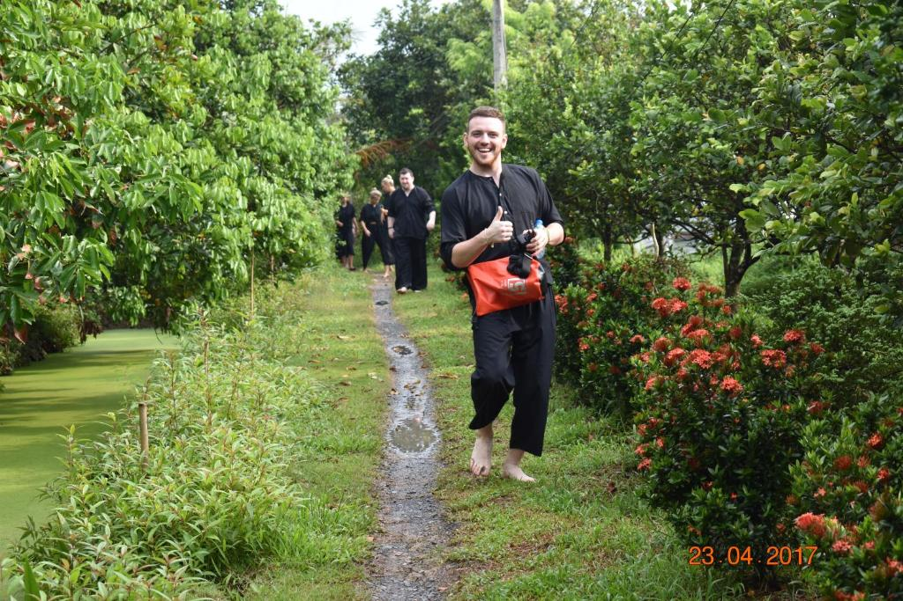
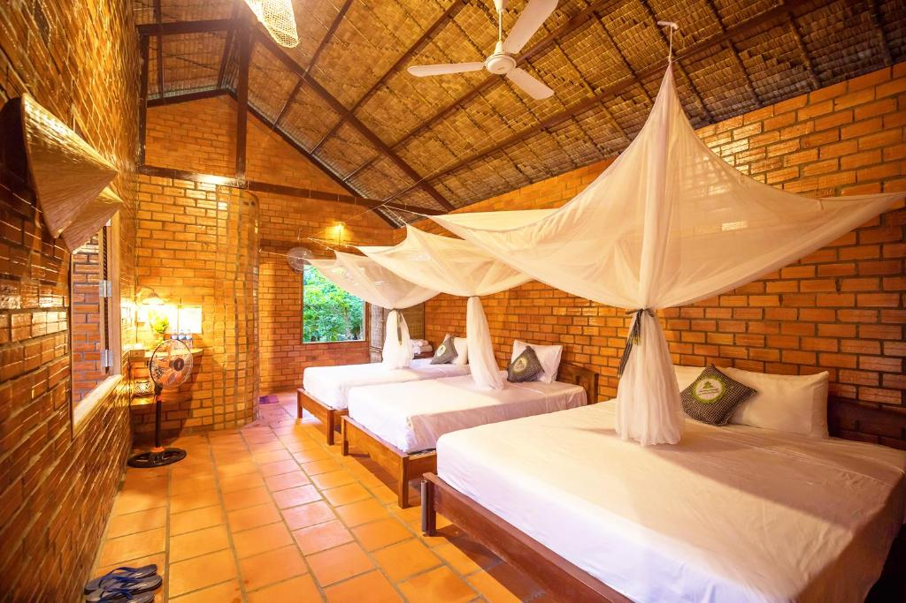

Hình Ảnh Nổi Bật




Giới Thiệu
Nằm ở Cái Bè, Mekong Rustic Cai Be cung cấp Wi-Fi miễn phí, nơi khách có thể trải nghiệm khu vườn, phòng chờ chung và nhà hàng.
Tại đây có phòng tắm riêng đầy đủ tiện nghi với vòi xịt/chậu rửa vệ sinh và dép đi trong phòng.
Homestay có sân hiên phơi nắng.
Khách nghỉ tại Mekong Rustic Cai Be có thể chơi bi-a trong khuôn viên, hoặc đi xe đạp ở khu vực xung quanh.
Chỗ nghỉ cách Sân bay Quốc tế Cần Thơ 78 km và cung cấp dịch vụ đưa đón sân bay mất phí.
Thông Tin Liên Hệ
- Số điện thoại: 0909 552 399
- Địa chỉ: Nhơn Lộc 1, Huyện Phong Điền, Thành phố Cần Thơ
- Email: info@mekongrustic.com
- Website: www.mekongrustic.com
- Giờ hoạt động: 24/7
Dịch Vụ & Tiện Ích
Wifi miễn phí
Nhà hàng địa phương
Tour chợ nổi
Tour đạp xe
Lớp học nấu ăn
Câu cá
Chèo xuồng
Vườn cây ăn trái
Điều hòa
Phòng gia đình
Dịch vụ giặt là
Bãi đỗ xe miễn phí